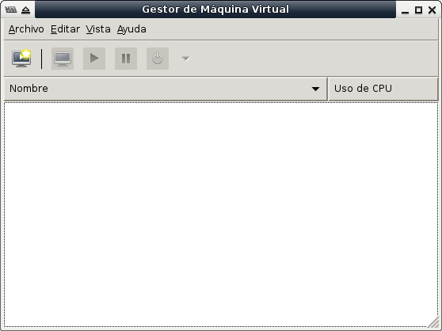
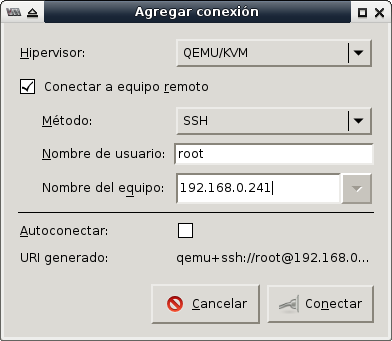

Instalación de CentOS para virtualizar
Instalar CentOS con lo mínimo necesario para virtualizar con KVM. Teniendo en mente que sólo va a llegar a Terminal, es decir, sin interfaz gráfica o GUI. La administración será vía OpenSSH y por el Administrador de Virtualizaciones desde otro equipo.
CentOS es una distribución GNU/Linux mantenida por la comunidad a partir del código libre de Red Hat. De una forma práctica, CentOS es lo mismo que Red Hat pero sin su marca comercial ni soporte técnico de paga. La estabilidad y confiabilidad de CentOS lo hacen la mejor opción para sistema operativo base de un servidor cuyo fin sea virtualizar. Recientemente se ha anunciado el apoyo directo de Red Hat a la comunidad de CentOS; de lo cual esperamos muchas ganancias para todos.
Objetivo
Instalar CentOS con lo mínimo necesario para virtualizar con KVM. Teniendo en mente que sólo va a llegar a Terminal, es decir, sin interfaz gráfica o GUI. La administración será vía OpenSSH y por el Administrador de Virtualizaciones desde otro equipo.
Requerimientos
- Una computadora o servidor con capacidad para virtualizar en hardware. Consulte el sitio del KVM para saber más.
- Un mínimo de 2 GB de RAM.
- Disco duro dedicado de por lo menos 100 GB.
- Descargar y quemar el CD Minimal de CentOS.
Arranque con el CD Minimal
Hay varios tipos de discos ISO de CentOS para cada versión. Desde DVD completos a CD para instarar por red. Su servidor recomienda usar el CD Minimal x86_64 ya que contiene lo básico para llegar a una terminal. Considere que es poco útil y riesgoso tener una interfaz gráfica en un servidor.
Durante la instalación elija estas opciones:
- GRUB: Install or Update
- Idioma: Spanish
- Teclado: Latinoamericano
- Special Storage Devices
- Use All Space
Ya que haga su primer arranque, a partir de lo instalado en el disco duro, continúe con los siguientes pasos.
Levante la red
Por defecto no levanta ningún dispositivo de red. Como partimos del CD Minimal necesitaremos salida a internet para bajar el software. Para configurar el dispositivo de red eth0 edite:
# cd /etc/sysconfig/network-scripts
# vi ifcfg-eth0
Si quiere usar una dirección IP fija, por ejemplo 192.168.0.250 con ruteador 192.168.0.254 (conserve el HWADDR):
DEVICE=eth0
HWADDR=xx:xx:xx:xx:xx:xx
TYPE=Ethernet
ONBOOT=yes
NM_CONTROLLED=no
IPADDR=192.168.0.250
NETMASK=255.255.255.0
GATEWAY=192.168.0.254
Luego debe configurar cuáles serán sus servidores DNS:
vi /etc/resolv.conf
Escriba el dominio si lo usa, luego cada servidor DNS como una línea nameserver. En el siguiente ejemplo se usa un dominio oficina.lan y las direcciones IP de los DNS de Google:
domain oficina.lan
search oficina.lan
nameserver 8.8.8.8
nameserver 8.8.4.4
En cambio, para solicitar una dirección IP dinámica al servidor DHCP se usa BOOTPROTO:
DEVICE=eth0
HWADDR=xx:xx:xx:xx:xx:xx
TYPE=Ethernet
ONBOOT=yes
NM_CONTROLLED=no
BOOTPROTO=dhcp
Después de cambiar estos archivos de configuración, reinicie el servicio de red para hacerlos efectivos.
# service network restart
Revise la dirección IP obtenida con:
# ifconfig eth0
Revise la tabla de ruteo también:
# route -n
Configure proxy de ser necesario
En caso de tener internet a través de un proxy debe de editar el archivo de configuración de Yum:
# vi /etc/yum.conf
Agregue una línea como la siguiente para definir el servidor proxy. Cambie proxy.oficina.lan por el nombre o dirección IP del proxy.
proxy=http://proxy.oficina.lan:3128
Actualize e instale el software para virtualizar
Ejecute estos dos comandos para actualizar las listas de los repositorios de CentOS:
# yum check-update
# yum update
Por ser programas indispensables, instale nano, sudo y man:
# yum install nano sudo man
Yum ofrece la instalación por grupos, éstos son conjuntos de paquetes de software. Para listar los grupos ejecute este comando:
# yum grouplist
Instale los grupos de paquetes que tienen que ver con virtualización en servidor:
# yum groupinstall "Virtualización"
# yum groupinstall "Plataforma de virtualización"
# yum install tunctl
Esta descarga es grande y puede demorar algo de tiempo, dependiendo de su velocidad de internet. Al terminar de instalar reinicie el servidor para asegurar que las actualizaciones y el nuevo software estén trabajando. Reinicie con:
# shutdown -r 1 &
# exit
Configuración del bridge
Cree el archivo ifcfg-br0 con la configuración para el bridge:
# cd /etc/sysconfig/network-scripts/
# nano ifcfg-br0
Si br0 va a tener una dirección IP estática, use lo siguiente como contenido del archivo ifcfg-br0 ajustando la dirección IP, la máscara y el gateway a sus necesidades:
DEVICE=br0
TYPE=Bridge
ONBOOT=yes
DELAY=0
NM_CONTROLLED=no
IPADDR=192.168.0.250
NETMASK=255.255.255.0
GATEWAY=192.168.0.254
Luego, hay que editar el archivo ifcfg-eth0 para indicar que ese dispositivo de red se va conectar al bridge:
# nano ifcfg-eth0
Con este contenido:
DEVICE="eth0"
HWADDR="xx:xx:xx:xx:xx:xx"
NM_CONTROLLED="no"
ONBOOT="yes"
BRIDGE="br0"
Configure el muro de fuego
Para que se permitan todas las comunicaciones que fluyan a través del bridge br0 es necesario indicarlo. Edite la configuración del muro de fuego:
# cd /etc/sysconfig/
# nano iptables
Agregue la línea -A FORWARD -i br0 -j ACCEPT como la primer línea con FORWARD, por ejemplo:
*filter
:INPUT ACCEPT [0:0]
:FORWARD ACCEPT [0:0]
:OUTPUT ACCEPT [0:0]
-A INPUT -m state --state ESTABLISHED,RELATED -j ACCEPT
-A INPUT -p icmp -j ACCEPT
-A INPUT -i lo -j ACCEPT
-A INPUT -m state --state NEW -m tcp -p tcp --dport 22 -j ACCEPT
-A INPUT -j REJECT --reject-with icmp-host-prohibited
-A FORWARD -i br0 -j ACCEPT
-A FORWARD -j REJECT --reject-with icmp-host-prohibited
COMMIT
Reinicie el muro de fuego
# service iptables restart
Verifique...
# iptables -L -v -n
Destruir el puente virbr0
Como se va a levantar el bridge br0 desde el sistema operativo, sale sobrando el puente que por defecto habilita libvirt. Para observar que esta presente virtbr0 ejecute:
# ifconfig
Notará que hay un dispositivo virbr0 con una dirección IP indpenediente (p.e. 192.168.122.1). El comando virsh net-list mostrará las redes para las virtualizaciones:
# virsh net-list
Nombre Estado Inicio automático Persistente
--------------------------------------------------
default activo si si
Para destruir la red default ejecute:
# virsh net-destroy default
# virsh net-undefine default
Revise:
# virsh net-list
# ifconfig
Reinicie el servidor
Para asegurar que las actualizaciones y configuraciones inicien al encender, reinicie el servidor.
# shutdown -r 1 &
# exit
Y revise que los dispositivos de red y los servicios estén trabajando como debe.
# ifconfig br0
# ifconfig eth0
# brctl show
Configurar libvirt para que use br0
Para que las virtualizaciones usen el bridge del sistema operativo, cree un archivo de configuración xml. Use el nombre de archivo que guste:
# cd /root
# nano bridge-br0.xml
Escriba el siguiente contenido, cambiando bridge-br0 por el nombre que usted prefiera:
<network>
<name>bridge-br0</name>
<forward mode="bridge"/>
<bridge name="br0"/>
</network>
Para cargar ese archivo xml en libvirt ejecute...
# virsh net-define bridge-br0.xml
La red bridge-br0 se encuentra definida desde bridge-br0.xml
Atención: En este momento, el comando # virsh net-list NO mostrará esta red. En cambio, con el parámetro --all sí lo verá:
# virsh net-list --all
Nombre Estado Inicio automático
-----------------------------------------
bridge-br0 activo no
Puede solicitar información detallada de una red con el comando virsh net-info seguido por el nombre de la red.
# virsh net-info bridge-br0
Nombre bridge-br0
UUID xxxxxxxx-xxxx-xxxx-xxxx-xxxxxxxxxxxx
Activar: no
Persistente: si
Autoinicio: no
Puente: br0
Observe que Activar y Autoinicio están en no. Configure que esta red se habilite al inicio, con:
# virsh net-autostart bridge-br0
La red bridge-br0-dgspm ha sido marcada para iniciarse automáticamente
Luego, arranque esta red con:
# virsh net-start bridge-br0
La red bridge-br0 se ha iniciado
Verifique que Activar, Persistente y Autoinicio estén en si:
# virsh net-info bridge-br0
Nombre bridge-br0
UUID xxxxxxxx-xxxx-xxxx-xxxx-xxxxxxxxxxxx
Activar: si
Persistente: si
Autoinicio: si
Puente: br0
También con el comando virsh net-list:
# virsh net-list
Nombre Estado Inicio automático Persistente
--------------------------------------------------
bridge-br0 activo si si
En dado caso de que necesite recuperar la información de la red en formato xml, use el comando virsh net-dumpxml:
# virsh net-dumpxml bridge-br0
<network>
<name>bridge-br0</name>
<uuid>xxxxxxxx-xxxx-xxxx-xxxx-xxxxxxxxxxxx</uuid>
<forward mode='bridge'/>
<bridge name='br0' />
</network>
Agregue un usuario común
Como en todo equipo de escritorio o servidor, es ampliamente recomendable dar de alta un usuario común y no usar root para todo. Para dar de alta un usuario ejecute el comando useradd con los grupos a los que necesite pertenecer y cambie minombre por su nombre para ingresar.
# useradd -g users -G tty,lp,wheel,uucp,games,video,audio,cdrom,kvm,qemu -m minombre
Establezca la contraseña:
# passwd minombre
Administrador de virtualizaciones
Desde un equipo con interfaz gráfica y el VirtManager instalado administramos las virtaliuzaciones.

Establezca la conexión vía OpenSSH. Le solicitará la contraseña root:

Verifique que en los detalles se use la configuración de red con el bridge br0: